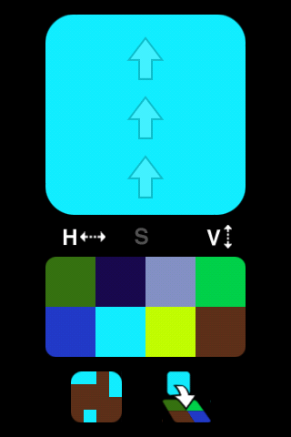
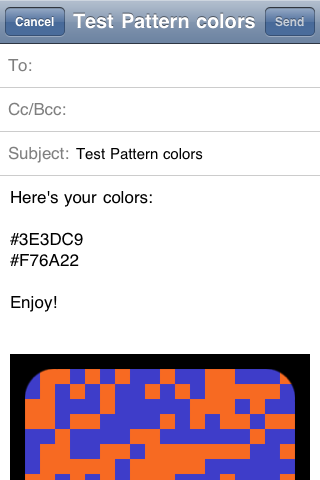

Test Pattern is an iPhone app that helps you discover and visualize compelling color pairs.
Test Pattern lets you find two colors, randomly or deliberately, and see how they work together.

It's for:
- Knitters
- Jewelers
- Anyone that just likes to look at colors
